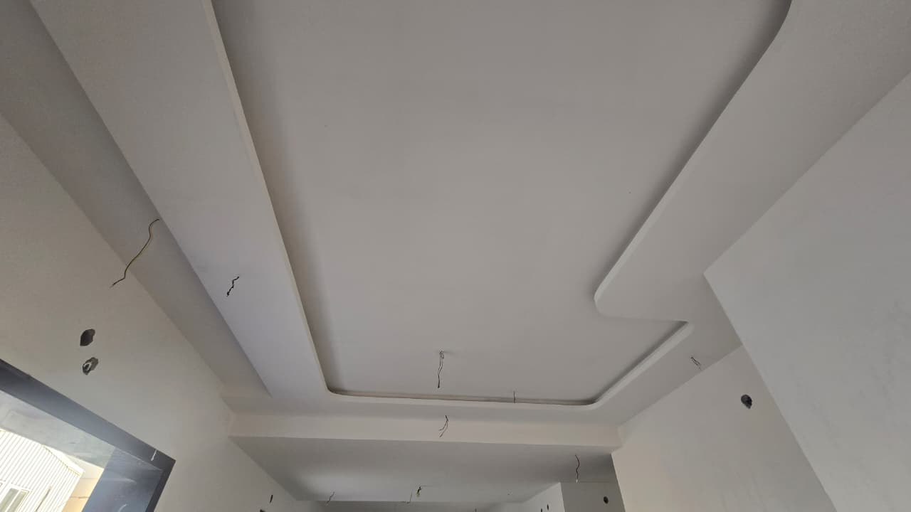
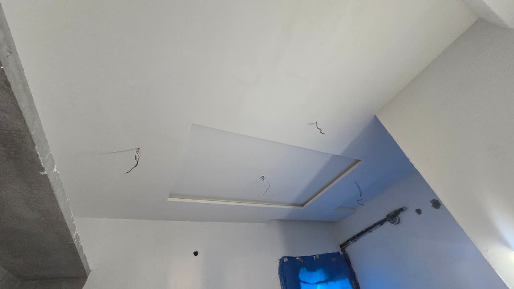
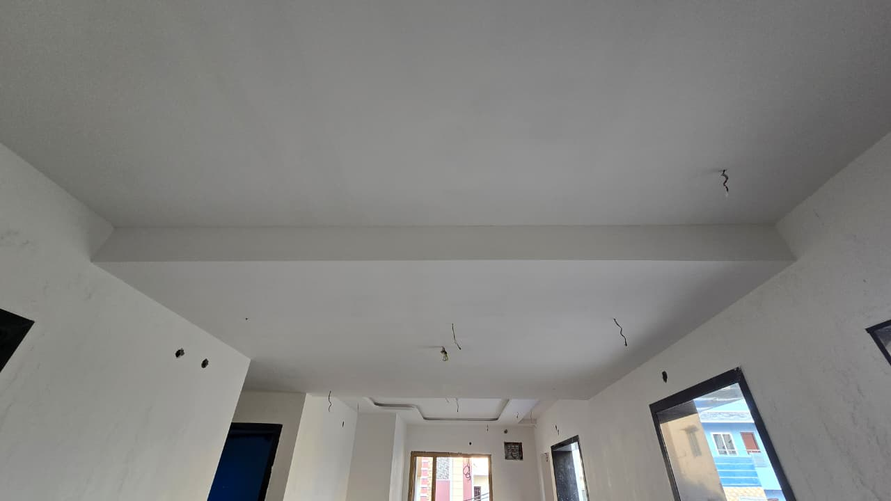

Electrician
Current-master lighting, electrical/control-options and procurement review staged.
Open the electrician and lighting pack: offline workbench, lighting plans, fixture/control/circuit schedules, generic product search, and inherited analytic heatmaps. Maps are estimates, not measured or physically validated simulation; selected curtain strips receive no lux credit. Product, protection and dimming compatibility holds remain.
Mason / civil
Civil review pack rebound to current master; construction holds remain.
Open the civil pack: source room/opening index, dimensioned review floorplan, ceiling and wall sheets, PDFs, SVGs, PNGs and drawing generators. Measurement and structural holds remain; retired floorplans are not the current geometry.
Contractor / joinery
Wardrobe pack and viewer bound to current master; interiors remain provisional.
Open the wardrobe and contractor pack: placement and provisional interiors, PDFs, SVGs, PNGs, editable data and cost allowances. Interiors remain provisional; the earlier OPT-E matte-laminate material and master split are retained; shutter mechanism, exact shade, fit and professional approval remain open. Generator sources are included with explicit public-copy reproducibility limits. The coordinated viewer and three renders illustrate the current proposals, not measured joinery. Retired G-series joinery is not current.
Release checks
- Provenance
- Final source packs must identify the coordinator-confirmed canonical master SHA-256. The complete inventory records repository-relative paths, byte sizes and SHA-256 values; the local integration receipt records scope and checks.
- Current staged source basis
- The editable public-safe master copy is derived
from canonical SHA-256
b6f6bf1a127c7e39086deb9fd1d2c0dff79a495381e1a4b9457f6a9a468f23ac. Path redaction changes its delivered byte hash; the source-versus-copy receipt records both. The provisional wardrobe reference is included alongside it. The historical-manifest correction documents an unavailable prior lighting manifest; compatibility does not mean its missing bytes were verified. Delivered trade packs and the final viewer are rebound to this source identifier. - Completeness
- Trade coverage, source receipts, PDF readability, SVG and PNG rendering, relative links, viewer behavior and visible review holds are checked locally. Source/public byte hashes are distinguished, and unlicensed manufacturer documents are official links rather than copies.
- Publication hold
- This decision addendum is separately versioned from the unchanged master-bound source packs for the repository's main branch/Pages. Publication does not approve construction, products, procurement, fabrication or any professional/site check.
Site views - not measured evidence
These three user-supplied photos are visual references only. Their filenames do not verify curtain-pocket dimensions, clearances or construction geometry. Use verified site measurements and the coordinated drawings for review; do not scale these photographs.


